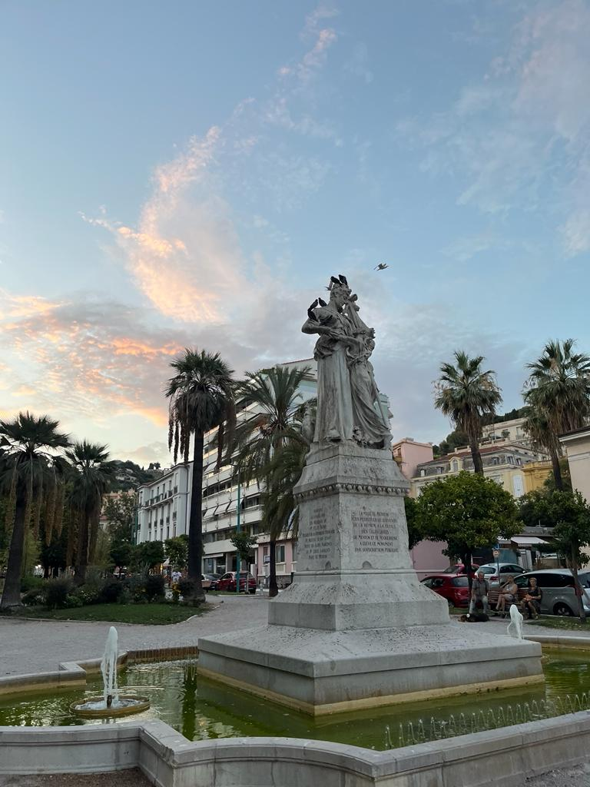
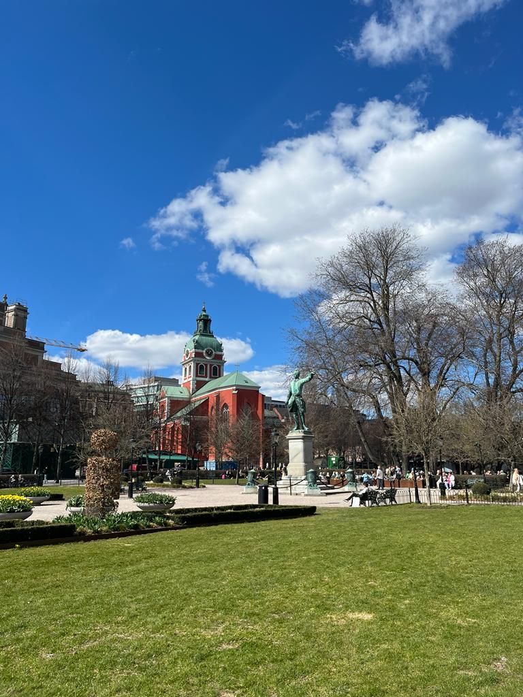
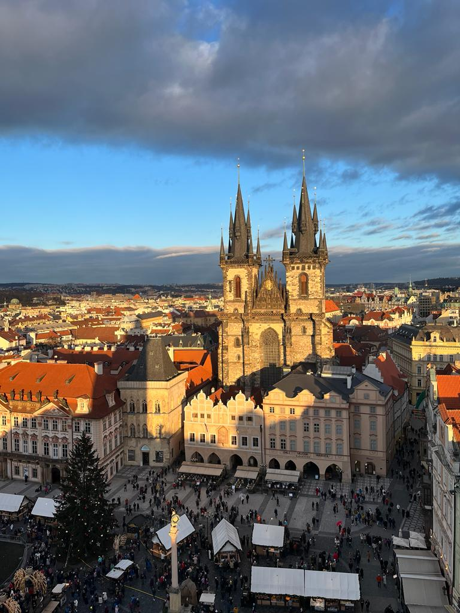

| Nr. Crt. | Scop | Explicație | Exemple | Provocări întâlnite |
|---|---|---|---|---|
| 1. | Agrement și recreere | Ei caută destinațiile ideale pentru a se relaxa în concediu, caută activități de agrement | Vacanțe la spa, resorturi, vacante la munte/ la mare, piscine | Costuri ridicate, vreme nefavorabilă, restrticții de calatorie |
| 2. | Explorare și aventură | Ei caută destinații noi pe care le pot explora, aventuri | Explorarea unui oraș nou, experiențe unice (ex. Zborul cu balonul cu aer cald în Cappadocia) | Program încărcat muncă/viața personală, jet-lag |
| 3. | Schimb cultural | Ei caută programe noi cărora li se alatură pentru a descoperi culturi, stiluri de viață, tradiții noi | Erasmus, Work and travel, UNICEF | Lipsa timpului, deoarece aceste programe durează mai mult decat o vacanță obisnuită |
| 4. | Educație | Ei călătoresc cu scop educativ, fie ca studiază în altă țară sau iau parte la cursuri de scurtă durată în altă parte | Adaptabilitatea la o nouă cultură + poate deveni costisitor | |
| 5. | Afaceri și muncă | Ei se deplasează între orașe/ țari cu scopul de a rezolva probleme de afaceri sau pentru a merge la muncă | CEO al unei companii internaționale, oameni stabiliți într-o anumita țară, dar care lucrează în alta țară | Au programul încărcat, naveta devine o rutină |